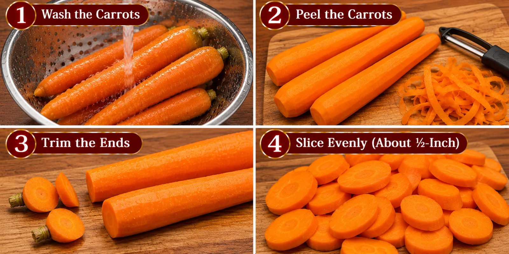
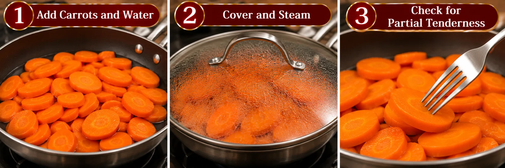
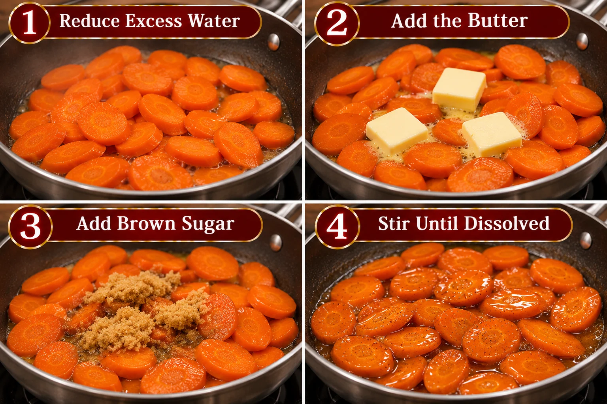
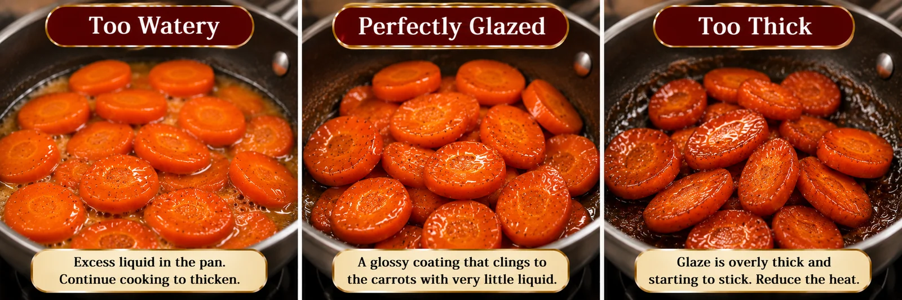
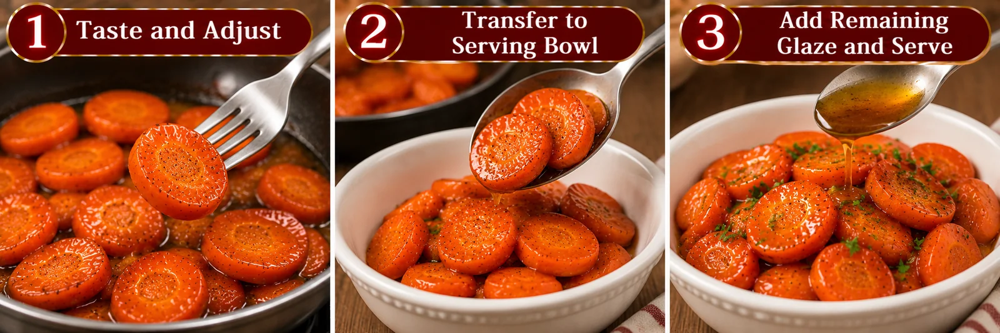

Buttery Brown Sugar Glazed Carrots
Tender carrots coated in a buttery brown sugar glaze, with a balance of sweetness and savory flavor.
Difficulty: Beginner • Total time: 25–30 minutes
Equipment: Large skillet with lid, cutting board, knife, peeler, measuring spoons, spatula or wooden spoon.
Ingredients
| Ingredient | Amount |
|---|---|
| Whole carrots | 2 pounds |
| Unsalted butter | 3 tablespoons |
| Light brown sugar, packed | 3 tablespoons |
| Water | ⅓ cup |
| Fine sea salt | ¼ teaspoon |
| Black pepper | ⅛ teaspoon |
Small note: Packed brown sugar means pressing the sugar into the measuring spoon so it holds its shape when tipped out.
Before You Start and Equipment
Cook carrots in a little water until partly tender, then add butter and brown sugar. Finish uncovered so the glaze becomes glossy and coats the carrots rather than pooling in the skillet. Whole carrots are recommended; baby-cut carrots work too.
Step-by-Step Instructions
1. Wash, peel, and cut

Rinse and scrub 2 pounds whole carrots. Peel, trim the ends, and cut into pieces about ½ inch thick, straight across or diagonally. Keep thickness consistent for even cooking. If using 2 pounds baby-cut carrots, leave smaller pieces whole and halve unusually thick ones lengthwise. For sticks, cut pieces about ½ inch thick and 2–3 inches long.
2. Steam until partly tender

Put the 2 pounds prepared carrots, ⅓ cup water, and ¼ teaspoon fine sea salt into a large skillet over medium heat. Cover and cook 7–10 minutes, stirring once halfway through. Test a thick piece with a fork: it should pierce with some resistance in the center. If still hard, cover for 2–3 more minutes. If the skillet dries out early, add 1–2 tablespoons water. The carrots will finish cooking in the glaze.
3. Add butter and brown sugar
Make it your own: Optional: add ⅛ teaspoon ground cinnamon or 1 tablespoon maple syrup with the butter and sugar. If using maple syrup, the glaze will be sweeter.

Remove the lid. If a lot of water remains, cook uncovered for 1–2 minutes to reduce it. Lower heat to medium-low and add 3 tablespoons unsalted butter, 3 tablespoons packed light brown sugar, and ⅛ teaspoon black pepper. Stir gently until the butter melts and sugar dissolves. If using salted butter, skip the ¼ teaspoon salt when you begin Step 2. For less sweetness, use 2 tablespoons brown sugar. For a richer glaze, add 1 tablespoon maple syrup now.
4. Thicken the glaze

Cook uncovered over medium-low heat for 5–8 minutes, stirring gently every minute or so. Carrots should become fork-tender but hold their shape. The glaze is ready when it leaves a shiny coating and only a little syrupy liquid remains in the skillet. If watery, cook 1–2 minutes longer. If sticking or darkening quickly, reduce heat. Optional: in the last 2 minutes, add ⅛ teaspoon cinnamon, or ½ teaspoon fresh thyme leaves (or ⅛ teaspoon dried thyme). For brightness, stir in 1 teaspoon lemon juice just before turning off heat.
5. Taste and serve
Make it your own: Optional finishing touches: stir in ½ teaspoon fresh thyme leaves (or ⅛ teaspoon dried), 1 teaspoon fresh lemon juice, or 1 tablespoon chopped parsley just before serving.

Turn off heat. Let a carrot cool enough to taste, then add a small pinch of salt or pepper if needed. Transfer to a bowl, spoon remaining glaze over top, and optionally sprinkle with 1 tablespoon chopped fresh parsley. Serve warm.
Troubleshooting
Carrots too firm: Add a little water, cover, and cook a few minutes more.
Carrots mushy: Shorten initial steaming next time.
Watery glaze: Cook uncovered longer.
Glaze too thick: Stir in 1 tablespoon water.
Too sweet: Add a little lemon juice.
Glaze burning: Lower heat immediately.
Uneven cooking: Cut carrots to similar thickness.
Make-Ahead, Holding, Storage, and Reheating
For advance preparation, wash, peel, and cut carrots up to a day ahead; refrigerate covered. Cooked carrots can also be refrigerated promptly and reheated. The glaze may firm up when cold and loosen when warmed.
For hot holding, use a covered food-safe warmer that keeps the carrots at 140°F or above, verified with a food thermometer. Stir occasionally. If the glaze thickens, stir in 1 tablespoon water. Otherwise refrigerate promptly rather than leaving them at room temperature.
Refrigerate leftovers in shallow covered containers within 2 hours, at 40°F or below, for 3–4 days. Reheat to 165°F. On the stovetop, warm over medium-low heat with 1–2 tablespoons water, covered briefly then uncovered and stirred. In the microwave, add about 1 tablespoon water, cover loosely, and heat in short intervals, stirring between them.